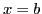
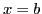

Next: The Mean-value Theorem Up: Theorem of mean value; Previous: Theorem of mean value; Contents Index
Let  be a continuous single-valued function of
be a continuous single-valued function of  ,
vanishing for
,
vanishing for  and , and suppose that
and , and suppose that  changes continuously when
changes continuously when  varies from
varies from  to
to  .
The function will then be represented graphically by a
continuous curve as in the figure. Geometric intuition
shows us at once that for at least one value of
.
The function will then be represented graphically by a
continuous curve as in the figure. Geometric intuition
shows us at once that for at least one value of  between
between  and
and  the tangent is parallel to the
the tangent is parallel to the  -axis
(as at P); that is, the slope is zero.
-axis
(as at P); that is, the slope is zero.
This illustrates
Rolle's Theorem:
If  vanishes when
vanishes when  and , and
and , and  and
and
 are continuous for all values of
are continuous for all values of  from
from  to
, then
to
, then  will be zero for at least one value of
will be zero for at least one value of
 between
between  and
and  .
.
This theorem is obviously true, because as x
increases from  to
to  ,
,  cannot always increase or
always decrease as
cannot always increase or
always decrease as  increases, since
increases, since  and .
Hence for at least one value of
and .
Hence for at least one value of  between
between  and
and  ,
,
 must cease to increase and begin to decrease,
or else cease to decrease and begin to increase; and for
that particular value of
must cease to increase and begin to decrease,
or else cease to decrease and begin to increase; and for
that particular value of  the first derivative must
be zero (see §8.3).
the first derivative must
be zero (see §8.3).
That Rolle's Theorem does not apply when  or
or  are discontinuous is illustrated as follows:
are discontinuous is illustrated as follows:
Figure 13.2 (a) shows the graph of
a function which is discontinuous (=  ) for ,
a value lying between
) for ,
a value lying between  and
and  .
Figure 13.2 (b) shows a continuous
function whose first derivative is discontinuous (=
.
Figure 13.2 (b) shows a continuous
function whose first derivative is discontinuous (=  )
for such an intermediate value . In either case
it is seen that at no point on the graph between
)
for such an intermediate value . In either case
it is seen that at no point on the graph between  and does the tangent (or curve) be,come parallel to
the
and does the tangent (or curve) be,come parallel to
the  -axis.
-axis.